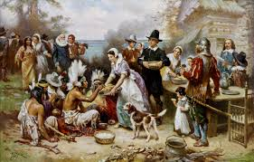
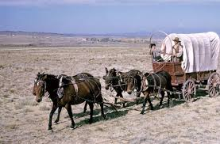
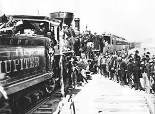
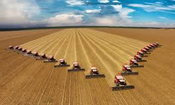
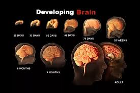
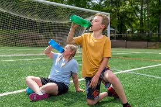
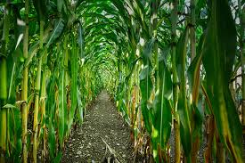
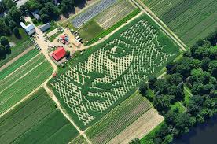

A Scholarly Journey through Cultural, Historical, and Scientific Texts

Before engaging with the text, the title juxtaposes a well-known nursery rhyme with a festive icon, suggesting an investigation into the non-traditional origins of a standardized cultural holiday. It prompts an inquiry into how individual advocacy shapes national identity.
This text elucidates the historical trajectory of Thanksgiving, crediting its status as a federal holiday to the persistent lobbying of Sarah Josepha Hale. Spanning 36 years of advocacy, Hale envisioned the holiday as a catalyst for national reconciliation during the Civil War. The narrative expands to include global harvest traditions, such as the Mid-Autumn Festival and Erntedankfest, framing gratitude as a universal human phenomenon.
Post-analysis reveals that cultural norms are often the result of deliberate social engineering rather than organic evolution. Personally, I resonate with Hale's tenacity; it reminds me that professional writing can serve as a potent tool for systemic change within one's community.


The concept of "expansion" often ignores the logistical hardships of the era. This reading serves to bridge the gap between the ideological "Manifest Destiny" and the grueling reality of 19th-century transcontinental migration.
Radner documents the arduous journey of pioneers moving from the Eastern United States to the West during the 1840s. The text highlights the critical importance of "wagon trains"—collaborative groups that mitigated environmental and logistical risks. The narrative eventually transitions to the industrial revolution, where the introduction of railroads compressed months of perilous travel into a few days of comfortable transit.
The transition from "wagon" to "metropolis" illustrates the rapid acceleration of human progress through infrastructure. This reminds me of modern digital connectivity—how we have moved from isolated efforts to global collaboration in a similarly short timeframe.

As consumers, we are often distanced from the origins of our sustenance. This speech promises to dismantle the "happy farm" façade perpetuated by corporate marketing and replace it with a critical view of industrial food production.
Birke Baehr delivers a poignant critique of the global food supply chain, specifically targeting genetically engineered organisms (GMOs), chemical pesticides, and CAFOs. Baehr advocates for a paradigm shift toward localized organic farming. He argues that the perceived higher cost of organic food is an investment that offsets future healthcare expenditures, urging a "know your farmer, know your food" philosophy.
This text reinforces the necessity of ethical consumerism. My personal takeaway is the importance of "impact over ambition"—choosing a path, like organic farming, that provides a tangible benefit to the biosphere over conventional success markers.


Sports are central to student life, yet the physiological risks are often understated. I approach this text seeking to understand the specific neurobiological vulnerabilities of the adolescent brain compared to adults.
Katherine Harmon investigates the impact of concussions on the developing teenage brain. Research indicates that because the frontal cortex (responsible for executive functions) is still maturing, adolescents are uniquely susceptible to long-term cognitive impairment. The study reveals that even when athletes report feeling "fine," reduced working memory and cognitive deficits persist months after the initial trauma.
The discrepancy between physical feeling and neurological health is alarming. As a student, this emphasizes that academic performance is deeply linked to physical safety; protecting one's "executive functions" is a prerequisite for long-term intellectual success.


What appears to be a simple autumnal amusement is actually a complex feat of spatial engineering. This text likely explores the intersection of ancient labyrinth traditions and modern GPS technology.
Wallmark explores the cultural and technical aspects of corn mazes. Tracing the history from Greek mythology to the first modern corn maze in 1993, the text describes how farmers use GPS and digital design to create intricate agrarian puzzles. It further analyzes the cognitive strategies of "maze-runners," noting that children often outperform adults due to their attention to environmental minutiae (maze intuition).
The "right-hand rule" and "maze intuition" are metaphors for problem-solving in life. This reading encourages me to maintain a detail-oriented perspective—often, the smallest clues lead to the most effective solutions when one feels "lost" in a project.
To produce a high-caliber critical review, one must maintain the following sequence: